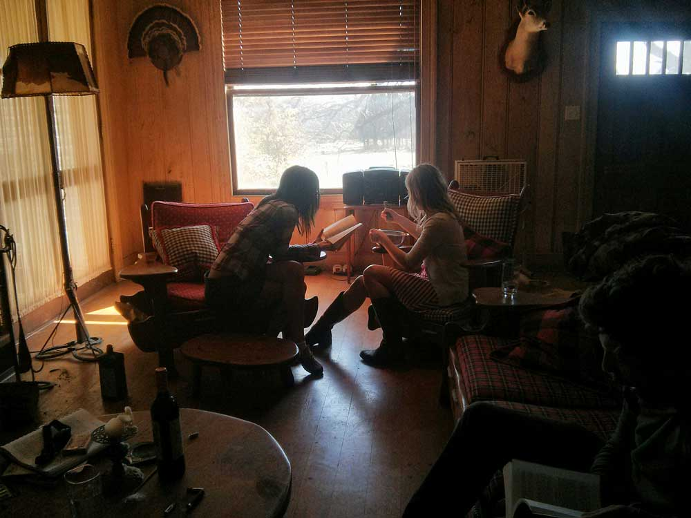
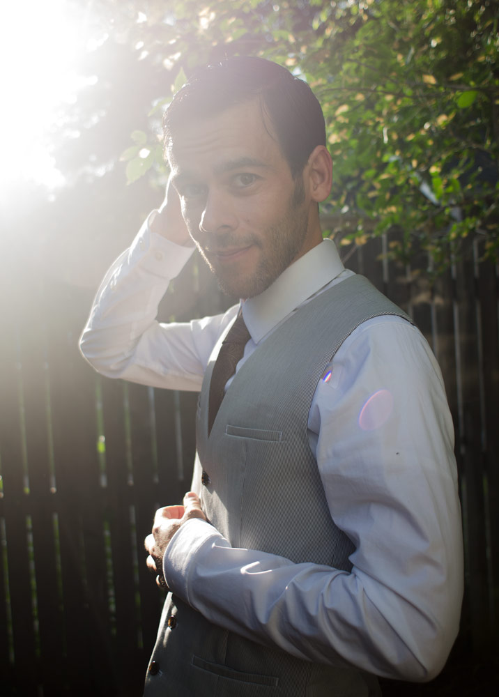
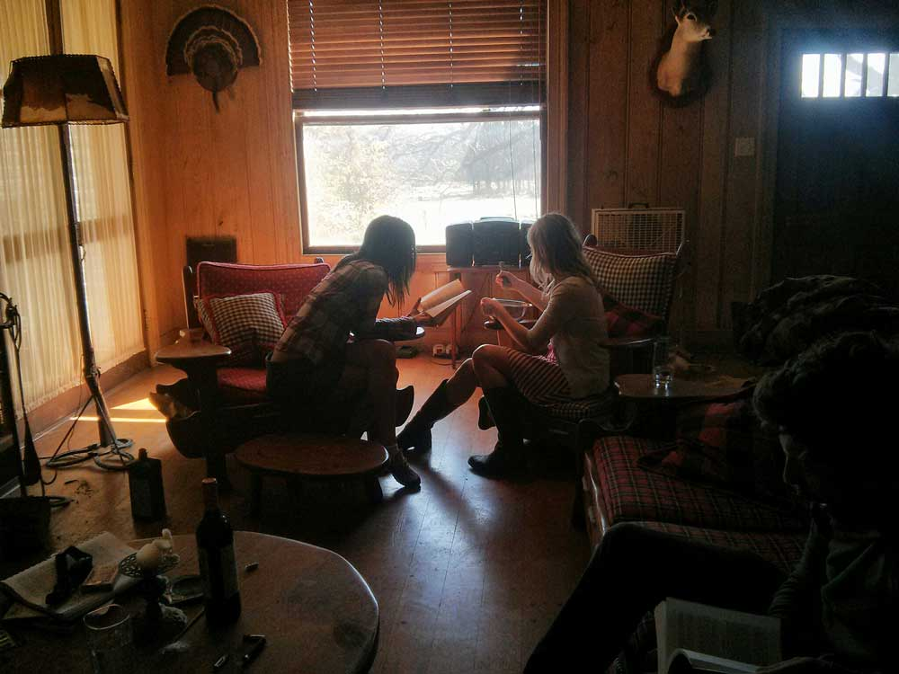
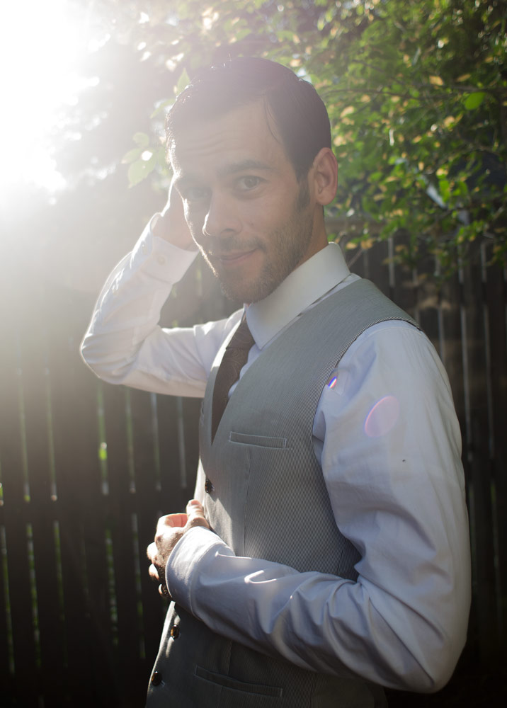

TIME IS NOT ON YOUR SIDE
 



And I think, When did I come here? Who was that one who made the move? And then I remember, Your body over mine, over mind, over my mind, I mind. I mind you, I mind you on top of my being, I mind it all. It stays there, minded, mined, mine you, I’m two bottles in, and I can almost feel your breath on my clavicle, but no mind. I can feel the cold draft from the window sill on my knees and typing keys in the distance, and I think maybe I’ve taken the wrong road. I can feel the non-gravity of a plane leaving, bringing me to another place and then I stood still. Staying still until the inertia of stillness propels me to the next feel-good. And then I know,
I am addicted. I am addicted to that aforementioned feel-good. Feel/Good. I am addicted to feeling. Good, bad, torture me, and I will stay around. So much so that I have proven to others with invisible partners that I stay for the feeling. Feel good, feel bad, feel whatever. I am addicted to intensity. The intensity of feeling. The intensity of that helmet of addiction. I can feel it come over the nape of my neck, the crown of my head, my brow line, my chin, my clavicle, and the inertia within the helmet propels me forward, spinning into the abyss. And… have you felt? Have you felt the helmet of addiction? The forward propelling exhale of relief, anxiety yet to come, take another thrust, sip, inhale, exhale, tingling in my fingertips and toes… I can feel you from all ends of my being, and I don’t ever want it to leave. I fall. I fall heavily, for free, without a price, with a detrimental pace into the blackness of your abyss and I hope never to come back. And then I wake up.
Work. Fucking hungover. You don’t want it. I want it. I want more. I want to consume you. I want to lie, deceive, whatever it takes to bring you back into my cocoon of feel-good. Feel good with me, I promise I will bring you to new heights and you won’t regret them. I will bring you in, I will care for you. I will put you higher than any woman has placed you before. I will lick the underside of your balls and suck your earlobes. I will bring you to utter resistance, and you will never fail. I will propel you into your world, you will succeed, and you will love me. And then you wake up. You want more, I give you more, we fall in love. We live in salt. The world around us sucks out any last elasticity you thought you had, and you come back for more. I worship you, I tell you you’re great. I adore you, I adorn you with my tongue, my words, I am yours to have. It’s your choice. I am already addicted.
Sometimes I find it hard to write you. Not because I don’t want to, but because the thoughts inside of my head don’t find the words appropriate for the level of emotion running through my veins. I want to say that I miss you, but it is so much different than that. I yearn for you. I long to see your face in front of me. I wish so much that my life included you, at a touchable distance. It baffles me how many lives I have led, how many different lives I have within my self. I know who I am, I like this being I am, I feel though everyone sees me as a different me at a different time in a different life. I don’t know how to explain it.
Somewhere between life and death, there is this waiting this period where I have not won, have not lost, anticipation is nonexistent, I am just simply floating. Almost as if I am stuck in water, my eyes are open, I cannot see anything clearly. My hair swims around me and I move in slow motion. Everything is free to go where it pleases, my arms and legs are extended, calm, strange and beautifully arranged around me. But I feel this is also a state of anticipation, waiting for the next wave to wash over my body, turn me in violent circles, not able to breathe, to take the life from me and send me back to sinking.
You know, you calmed me down, from that last tumble, showed me that life is fragile, and intricately beautiful. Your gestures have changed me as a human, brought a smile back to my heart, allowed me to feel in a way I thought not possible. I am so thankful for you. Sometimes I think I may never see you again. I don’t know. That sounds like the worst possible ending to this story, but I have no idea. I feel so far from you, but hold you so close in my days. Then I just know I will, some time, see you. No matter what. I have to. Until then I enjoy your words, your pictures, your thoughts, your gestures from afar.
The air conditioning is whirring in the background. There’s a fan on in the bedroom. My knees click as I kneel down onto the hard concrete floor. I thought there might be more of a sound. I expected a satisfying crunch, a violent rip, some tearing at least.
I shoved the wedding dress in a cotton bag and it just slid in there silently. You’d think after years and pain and fret, at least something could rip- give me a sign of satisfaction. But that’s how it goes. Smoothly into a bag and never seen again. All of this- of these years, these drunken nights and spitting insults, fretting the future, grasping what once was- and it slides so smooth like bourbon on a crisp eve. The fan is still whispering, constant. It’s full of dust and that dust knows what this means. That dust started collecting when the dress was perfect. Maybe I should throw away the fan, too.
I don’t want to know this anymore. I want to erase you. But entropy is a motherfucker and it stopped caring about anything as soon as it was acknowledged. You can wait for a broken teacup on the floor to put itself back together as long as you want. It will always be in shards.
alone with day alone with burned letter, raindrops pouring, eyes dry.
purely, simply, broken heartedly missing you. Please stop leaving me, it hurts. I love you, I won’t interfere with you. The absence of your presenceis tearing me down, apart. You can’t see that, I’m having fun. This feels like the New York year. Where you disappeared and I loved you still. This time it’s over more than a bicycle. I wish things were still so simple. Your fingers press black and white keys and they play strings in my heart. The only that I have of strength, I use it all to hold back the headache of raindrops welling in my being. You’re my best friend.
Smoke signals, a letter, a call, anything. . . p l e a s e
I look down at my wine in the dim leftover light of almost sunset setting in the apartment I reside in.
The fucking flies are in my wine. I guess we are similar creatures when I see them there, drowned in red wine. I would never take it that far though. Those selfish flies don’t even consider that FIRST OF ALL, I wanted to continue drinking my wine without sharing it. SECOND OF ALL, there is probably someone waiting on them to come home and do something else. What a shame that would be to fly by your brother, happy as can be, drowned with a frozen expression of drunken ecstasy in a short glass filled with red wine. That fly, that drunken idiot fly, didn’t even consider that he owes his brother ten dollars. But when I see these stupid flies, with a shit eating grin across their faces, consumed with MY wine, I wonder why I can’t be so happy. Their whole lives they are constantly in the search of the ultimate, the sweet, cool, smooth rich red wine, just to lay in it in their final moments. Well they landed right in it, and the search is over…
I wonder if they ever regret their sweet ecstatic armageddon? Motherfuckers were drinking my wine.